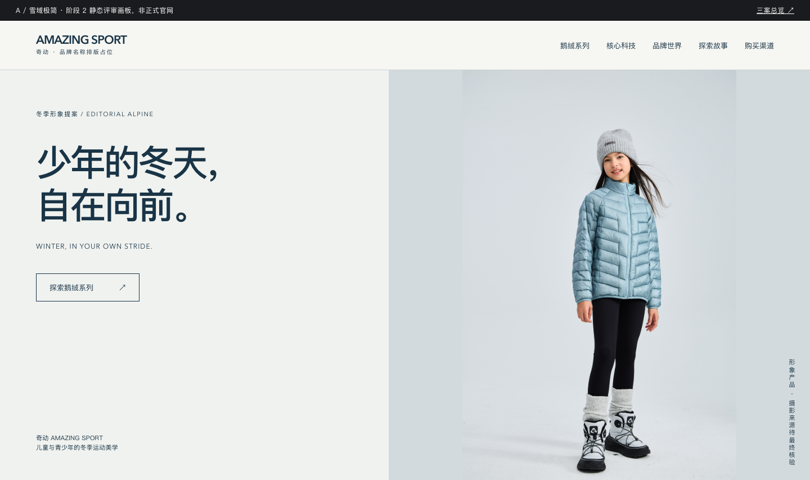
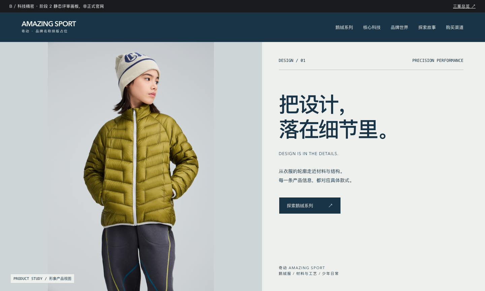
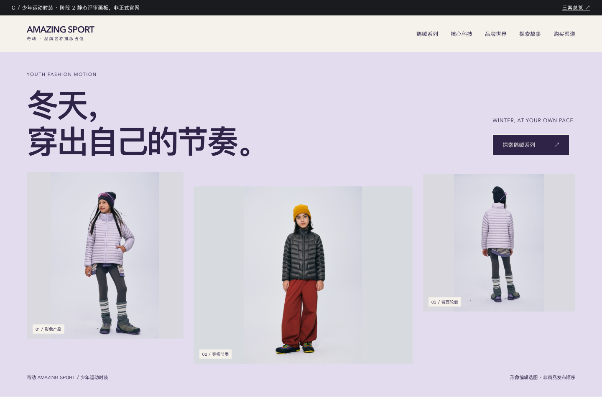

A · 雪域极简
安静、舒展。用蓝色服装和留白建立冬季形象。

B · 科技精密
清楚、有序。从产品轮廓走近材料与依据。

C · 少年运动时装
年轻、自主。紫色与错位摄影带来穿搭节奏。
A 为主要候选。比较重点：摄影、排版、产品气质与手机阅读。
每案包含首屏构图、产品信息/证据样式、选购指南片段；不是完整业务页面。

安静、舒展。用蓝色服装和留白建立冬季形象。

清楚、有序。从产品轮廓走近材料与依据。

年轻、自主。紫色与错位摄影带来穿搭节奏。